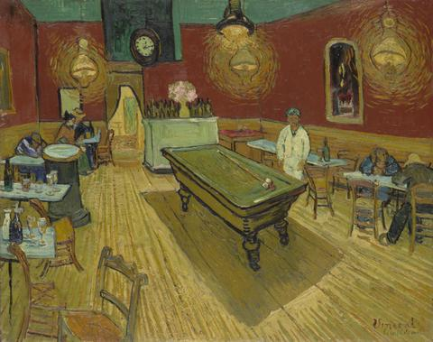

Le café de nuit (The Night Café)
Artist: Vincent van Gogh
Year: 1888
Featured in Cinema
Film(s)/ TV Show(s): Lust for Life(1956), The Sopranos(1999 - 2007)
The Connection
Vincent van Gogh's Le Café de nuit (The Night Café) (1888) is connected to Lust for Life (1956), which portrays the artist's life and artistic struggles. The painting also appears in The Sopranos (1999 - 2007), where it is referenced as part of the show's visual storytelling. Across these works, The Night Café serves as a reminder of Van Gogh's legacy and the emotional intensity associated with his art.
← Back to Exhibition